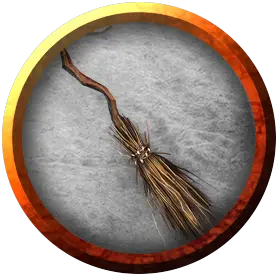

Оживлённая метла атаки
Broom of Animated Attack
Маленький Конструкт, без мировоззрения

Класс Доспеха 15 (природный доспех)
Хиты 17 (5к6)
Скорость 0 футов, летая 50 футов (парение)
| мод | спас | ||
|---|---|---|---|
| СИЛ | 10 | +0 | +0 |
| ЛОВ | 17 | +3 | +3 |
| ТЕЛ | 10 | +0 | +0 |
| мод | спас | ||
|---|---|---|---|
| ИНТ | 1 | −5 | −5 |
| МДР | 5 | −3 | −3 |
| ХАР | 1 | −5 | −5 |
Иммунитет к урону психическая энергия, яд
Иммунитет к состояниям окаменение, опутанность, ослепление, отравление, сбивание с ног, паралич, очарование, глухота, испуг, истощение
Чувства слепое зрение 30 футов, пассивное Восприятие 7
Опасность 1/4 (50 опыта)
Бонус мастерства +2
Особенности
Восприимчивость к антимагии. Метла становится выведенной из строя, пока находится в поле антимагии. Если она станет целью рассеивания магии [dispel magic], метла должна будет совершить спасбросок Телосложения со сложностью, равной сложности спасброска от заклинаний наложившего рассеивание и, при провале, потерять сознание на 1 минуту.
Обманчивая внешность. Пока метла не двигается и не летает, её невозможно отличить от обычной метлы.
Действия
Мультиатака. . Метла совершает две рукопашных атаки.
Рукоятка. . Рукопашная атака оружием: +5 к попаданию, досягаемость 5 футов, одна цель. Попадание: 5 (1к4+3) дробящего урона.
Реакции
Оживлённая атака. Если метла оставалась без движения и существо хватается за неё, метла должна совершить проверку Ловкости, противопоставленную проверке Силы существа. Если метла побеждает в этом состязании, она вырывается из хватки существа и совершает рукопашную атаку против него с преимуществом.
Описание
Живую метлу атаки легко спутать с метлой полёта. Она атакует существо, которое берёт её в руки или пытается оседлать.
Летающая метла. Некоторые живые мётлы атаки позволяют их создателям ездить на них. В таком случае они ведут себя как обычные мётлы полёта [broom of flying]. Живая метла атаки, впрочем, может нести только половину веса, который может переносить метла полёта.